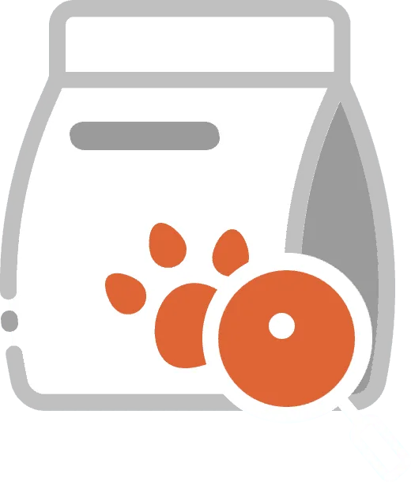
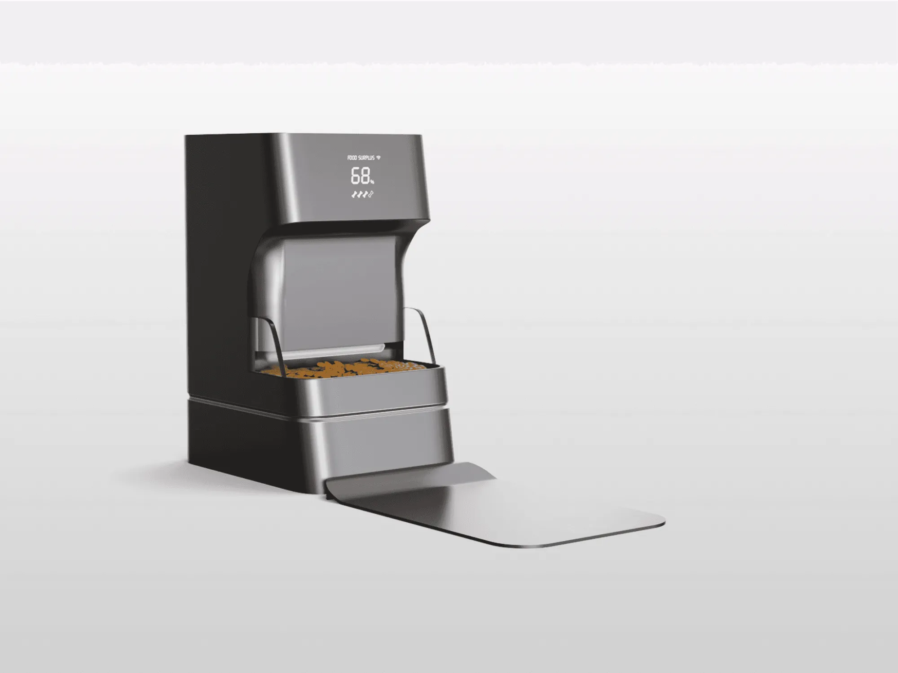

High Prevalence
A majority of dogs are currently overweight or obese, indicating that weight issues are no longer isolated cases but a widespread health concern.
59%
of dogs are overweight or obese

January 2025


Step by step development
Driving a System-Level Design Approach
I shifted the project from feature-based thinking to an integrated, research-driven system.
By translating user insights into a structured framework, I connected feeding, weighing, and calorie tracking into a unified feedback loop.
My contributions included:
Pet obesity has become a widespread and growing health issue
A majority of dogs are currently overweight or obese, indicating that weight issues are no longer isolated cases but a widespread health concern.
of dogs are overweight or obese
There is a significant gap between actual weight conditions and owner awareness, suggesting that many cases go unrecognized.
of owners identify their pet as overweight
Even when owners attempt weight management, results are often inconsistent or short-lived.
Excess weight impacts more than appearance. It shortens lifespan and increases the risk of chronic health issues.
Pet obesity management and pet tech are both expanding quickly, leaving room for an integrated solution.
Pet weight management lacks an integrated and sustainable system that supports consistent, long-term health tracking.
Weight control depends largely on manual effort and routine.
We interviewed 11 dog owners across different weight conditions, including owners of overweight, previously overweight, and healthy-weight dogs.
The interviews focused on feeding habits, portion control, and health tracking behaviors.

From our interviews, two dominant themes emerged that shaped the direction of the project.
These insights revealed that weight management depends heavily on manual effort and separate tools.
Research reveals a significant perception gap in pet obesity.
of dogs are overweight or obese
59% of dogs are overweight or have obesity, but only 17% of dog owners consider their pet overweight or having obesity.
Integrating feeding and weighing into one system.
By embedding weight measurement directly into the feeding routine, the system removes the need for separate tracking behaviors. This ensures consistent data collection and supports sustainable weight management.
Competitors offer fragmented solutions.

Turning routine feeding into a measurable health interaction.
The product transforms routine feeding into a structured health process. Each meal generates measurable data that supports monitoring, analysis, and adaptive feeding decisions. By connecting behavior with data, the system enables consistent, long-term weight management without adding complexity to the user experience.

The first-generation prototype validated the core system logic.


The second-generation prototype enhanced the app experience.


DRAG TO EXPLORE
Next project
Brilliant.org
View case study